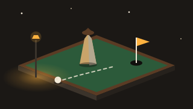

Smaç
Pota kayıyor
Gece mahalle sahası
Parmağını yukarı kaydır, topu potaya at.
Duraklatıldı
Nasıl oynanır?
Gece mahalle sahasında, sokak lambasının altında basketbol atıyorsun. Telefonda parmağını topun üstüne koyup yukarı doğru kaydır ve bırak; bilgisayarda fareyle aynı şekilde sürükle. Ne kadar hızlı kaydırırsan top o kadar güçlü, hangi yöne kaydırırsan o yöne gider. Klavyede sol ve sağ ok tuşlarıyla nişan al, boşluk tuşunu basılı tutup bırakarak at. Top çemberin içinden geçerse sayı olur; tabelaya ya da çember kenarına değmeden giren "temiz" atış fazladan puan getirir. Art arda isabet seri çarpanını artırır, üçüncü isabette "Smaç!" gelir. Seri 3'ü geçince pota kaymaya başlar (hareket başlamadan bir saniye önce soluk bir çerçeveyle uyarır), 6'dan sonra uzaklaşır. Üç mod var: 60 saniyede en çok sayı, üç ıskada biten Sonsuz ve o günün pota dizisini herkes için aynı gösteren on atışlık Günlük. Kolay seçeneği yörünge önizlemesini ve biraz daha fazla yardım açar. En iyi skorun yalnızca bu cihazda saklanır; oyun internetsiz de oynanır.
Benzer oyunlar
-

SporMini Golf Türkiye
Kapadokya'dan Nemrut'a dokuz delikli 3D mini golf. Çek-bırak vuruş, sektiren peribacaları, Galata yokuşu, Kız Kulesi vapuru ve skor kartı.
-
 Aksiyon
AksiyonYokuş Aşağı
Gece İstanbul yokuşlarında sodyum ışıklı 3D pistte yuvarlanan top. Sağa sola yönlendir, kor bloklardan kaç, rampalardan uç; günlük pist ve sonsuz mod.
-
 Bulmaca
BulmacaKayıp Minareler
Selçuklu ve Osmanlı mimarisinde izometrik 3D imkânsız geometri bulmacası. Parçaları döndür, köprüleri kaydır, bekçiyi minareye ulaştır ve sekiz minarenin ışığını yak.